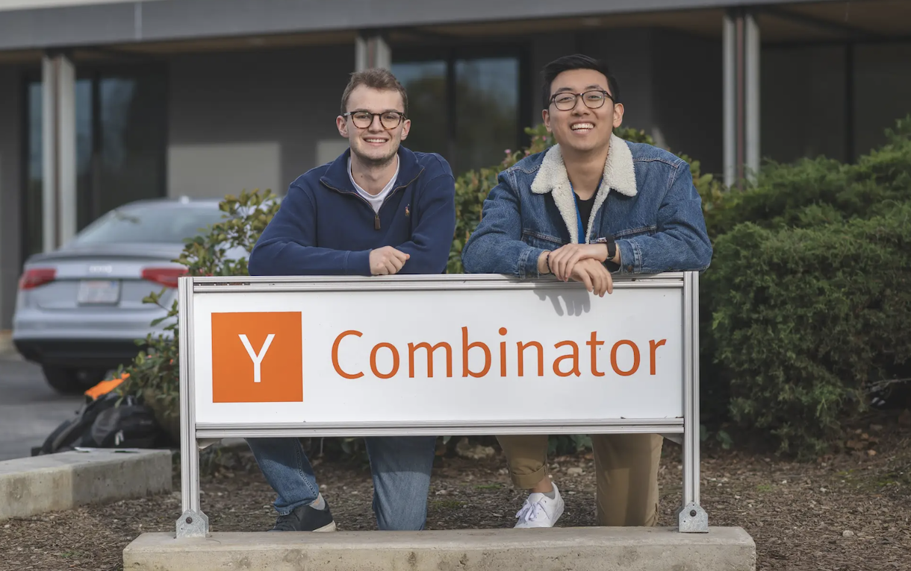
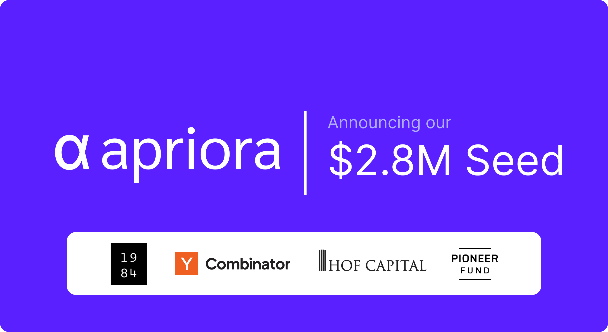
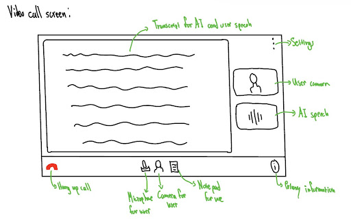
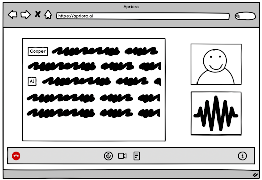
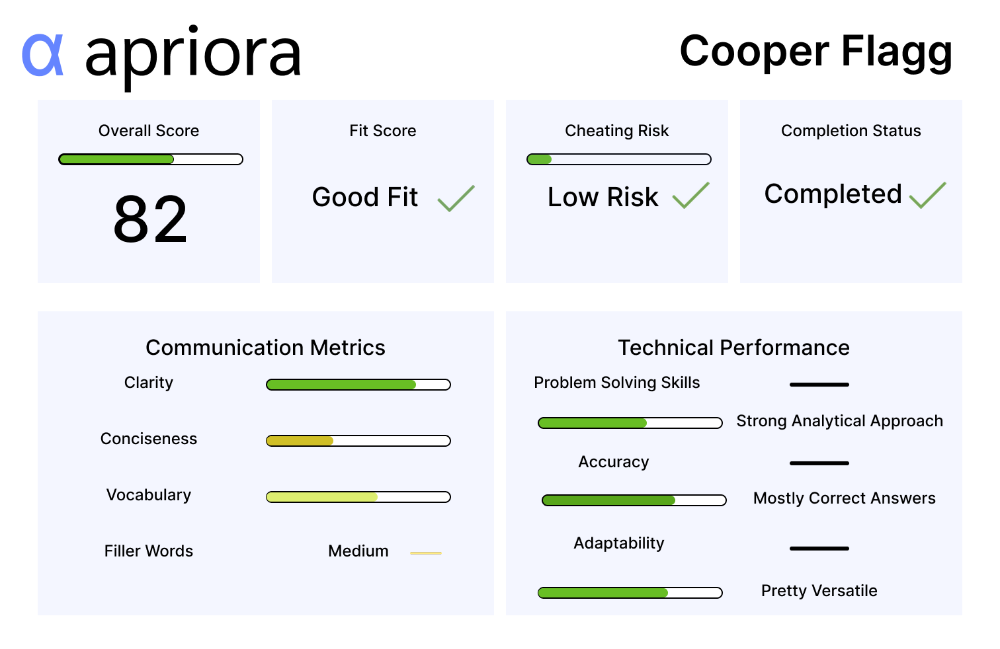
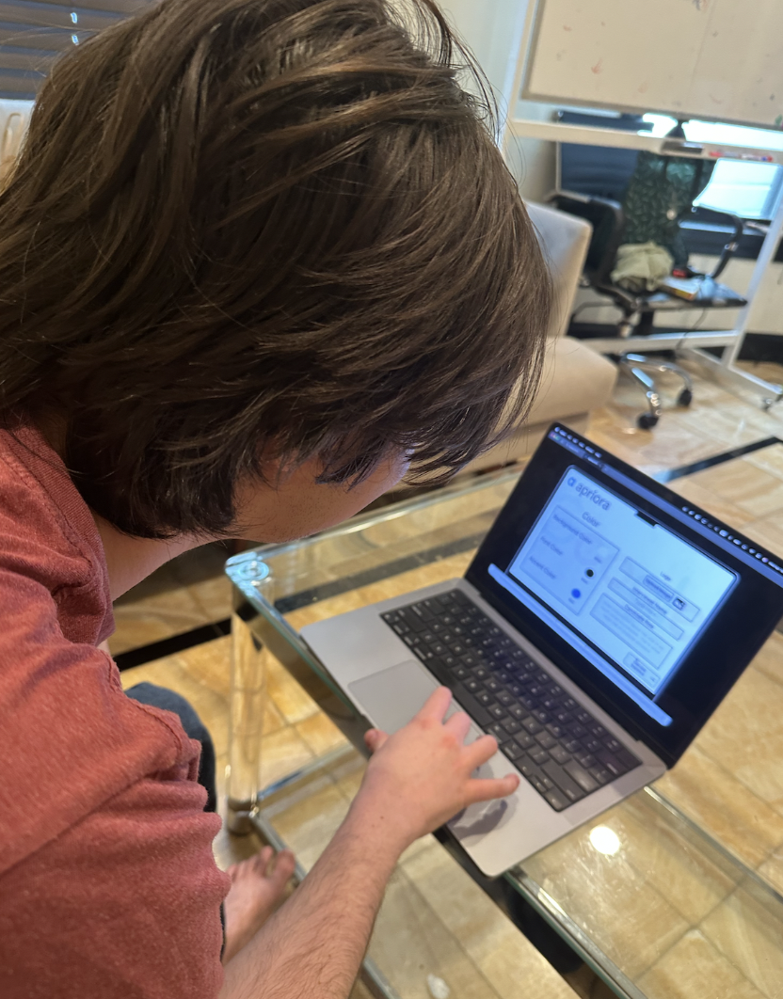
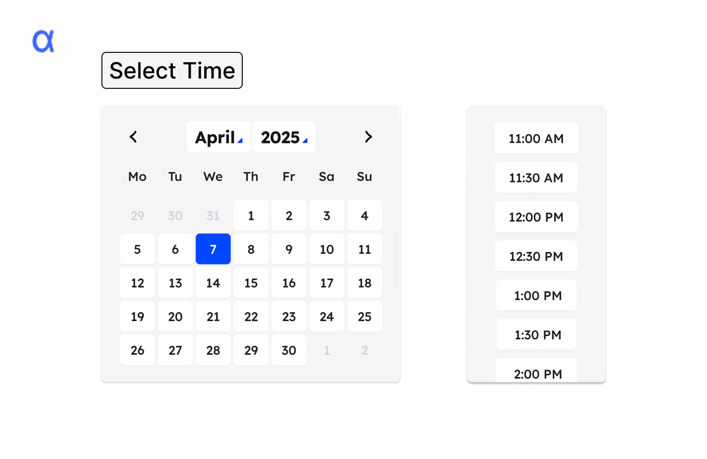

🤝 Role & Team
Most of this project was designing components in Figma as a team, but my core role was refining and polishing the final interface. I focused on visual clarity: selecting colors for hierarchy, adjusting spacing and rounded edges for flow, and making sure the product felt clean, consistent, and branded. I was the “final filter,” ensuring every detail aligned with the tone of a trustworthy AI platform.
🌍 Context & Problem

Apriora is an AI startup streamlining behavioral and technical interviews for recruiters. With direct access to the founders, we grounded our work in their core challenge: replicating authentic, human interviews using AI. Their approach was nuanced, and we designed to highlight this—ensuring the platform felt intuitive while communicating its distinct structure.
🔍 Research

Speaking with Apriora’s founders shaped our entire design. Their product blends speed with emotional nuance—something most AI tools don’t. We listened closely and aligned our design to reinforce recruiter insight and candidate comfort. This understanding influenced everything from layout and copy to the overall user journey.
🔀 Process
Our process followed an iterative design cycle:
1. Sketching
We mapped early layout and flow ideas with individual sketches.

2. Lo-Fi Prototype
We created rough wireframes to test structure and functionality.

3. Hi-Fi Prototype
We added refined visuals, branding, and interactivity.

4. User Testing
We observed real users to pinpoint friction and refine the design.

💡 Solution

We designed a streamlined interface that felt both human and efficient. Highlights included:
- Smooth scheduling flow with calming color hierarchy
- Welcoming waiting room with familiar cues
- Dual-transcript meeting room with self-view
- Custom branding—logos, color, and AI voice naming
📊 User Testing
We asked users to simulate a recruiter flow—from setup to insights. Some skipped key instructions, struggled with post-interview steps, and relied on visual cues to guide them.
Based on feedback, we clarified labels (“Role” → “Candidate Role”), added tooltips, refined layout, and improved navigation.
📚 Learnings
One key takeaway: designing as a team means letting go. Some of my ideas evolved, some got replaced—and the final result was stronger for it. I also learned how powerful Figma can be not just for prototyping, but for dialogue. It helped us explain intent, challenge each other respectfully, and build a better product together.